Tous mes projets
Découvrez en détail les coulisses, les technologies utilisées et les visuels de mes réalisations.

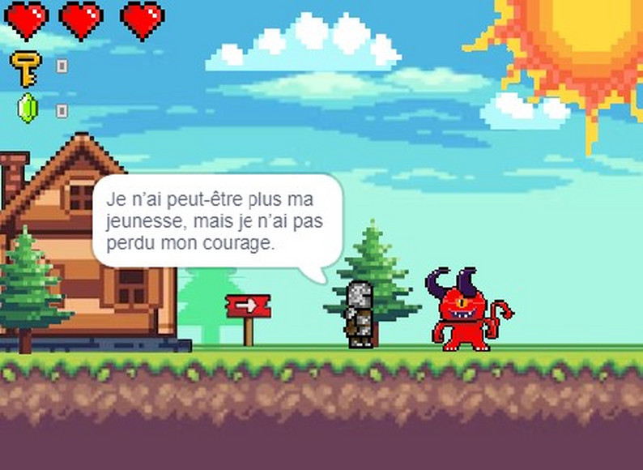
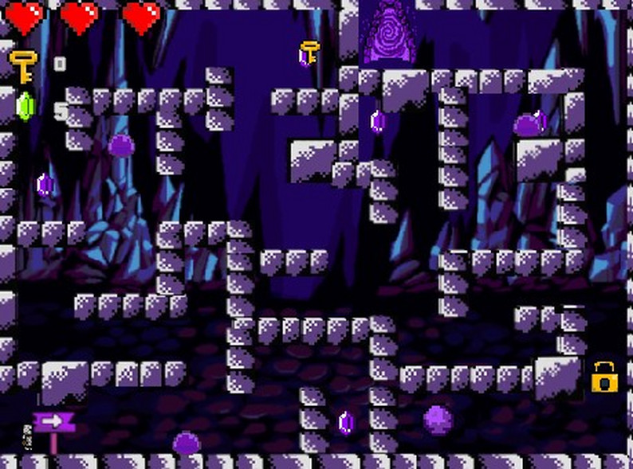
Dungeon Adventure — 2D
Projet universitaire réalisé dans le cadre de la SAE105 en équipe sur Scratch, où j'ai occupé le rôle de programmeur principal et game designer. J'ai géré une grande partie du projet en autonomie, reprenant également le travail d'un membre peu impliqué.
J'ai conçu l'intégralité du gameplay, système de vies et game over, inventaire avec rubis et clé de progression, menu principal avec gestion du son, et tous les sprites réalisés sur Pixel Studio avec leur animation, (slimes, objets, ennemis, maps) dans un style inspiré des jeux Game Boy Advance.
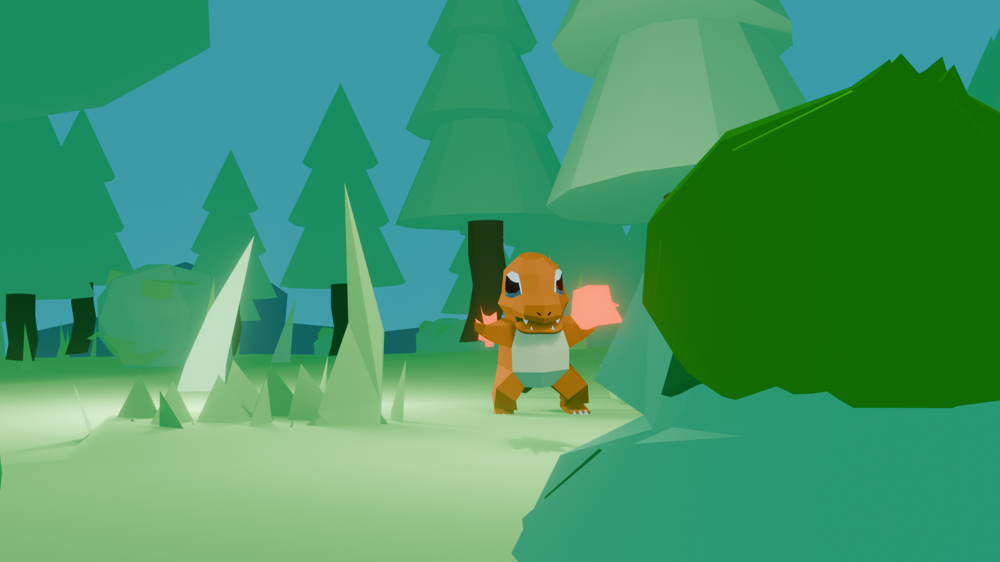
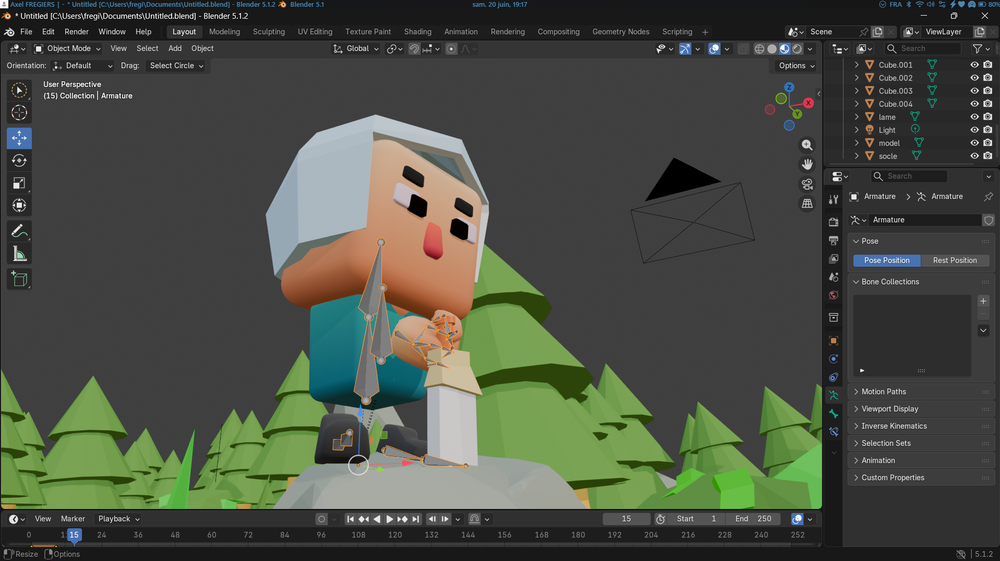
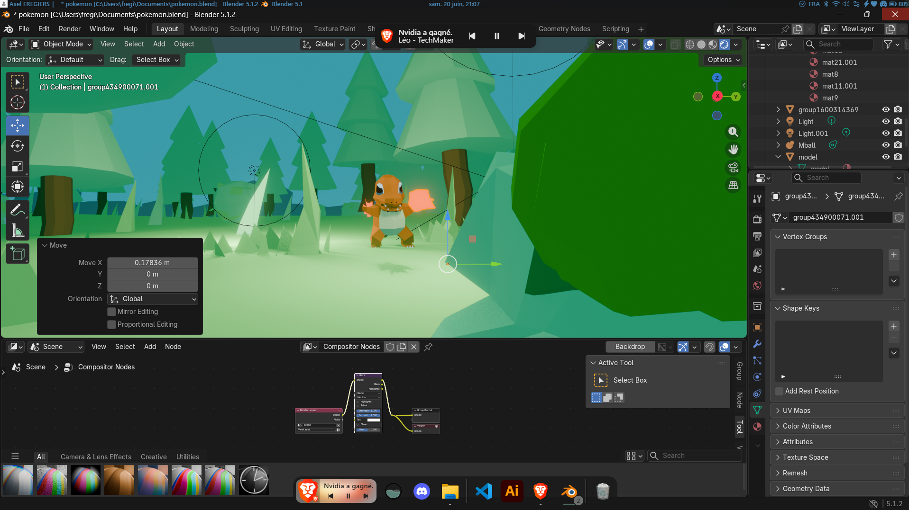
Modélisation 3D — Low poly
Passionné de jeux indépendants depuis l'époque où je regardais Squeezie, Farod et leurs Let's Play sur YouTube, le style Low Poly a toujours eu une place particulière pour moi, cette esthétique géométrique qui donnait vie aux premiers jeux indés que je découvrais.
Sur Blender, j'ai modélisé deux scènes, une forêt low poly avec Salamèche et Bulbizarre entièrement modélisés, avec travail de lumière pour un rendu propre et cohérent. En parallèle, un personnage original avec casque, épée et armature complète créée pour l'animation, projet encore en cours.
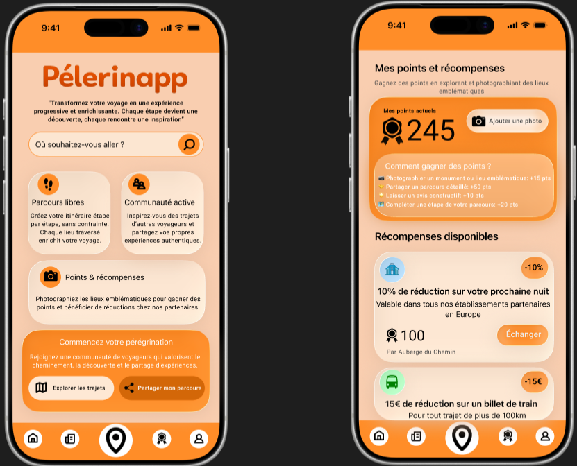
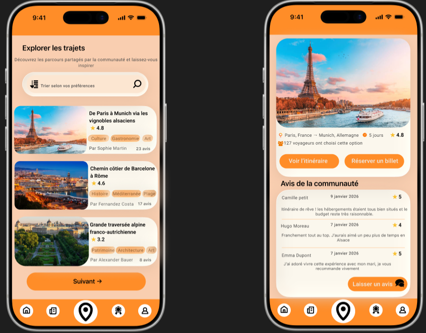
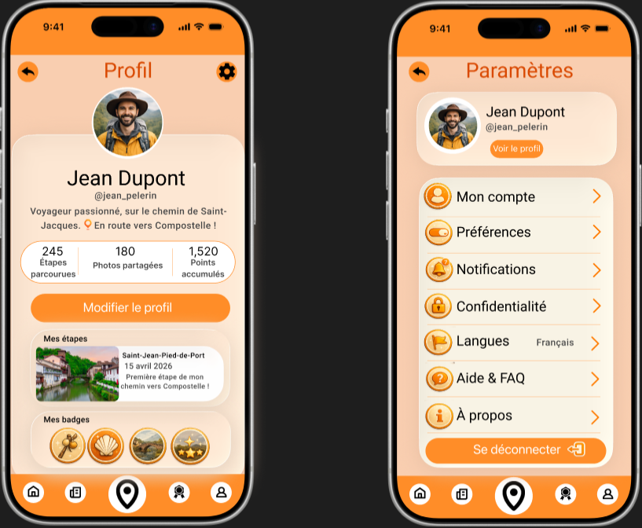
Pélerinapp — Application mobile fictive
Pélerinapp est un projet de design d'application mobile conçu pour transformer le voyage et le pèlerinage en une expérience progressive, enrichissante et connectée. L'objectif principal est d'accompagner les utilisateurs pas à pas en combinant exploration libre, planification fine d'itinéraires et partage au sein d'une communauté active de voyageurs.
L'application intègre une dimension de gamification unique grâce à un système de points et de récompenses : en photographiant des monuments et des lieux emblématiques traversés, les utilisateurs accumulent des points échangeables contre des avantages concrets (réductions sur les nuitées en auberge, les billets de train ou le matériel de randonnée) auprès d'établissements partenaires.

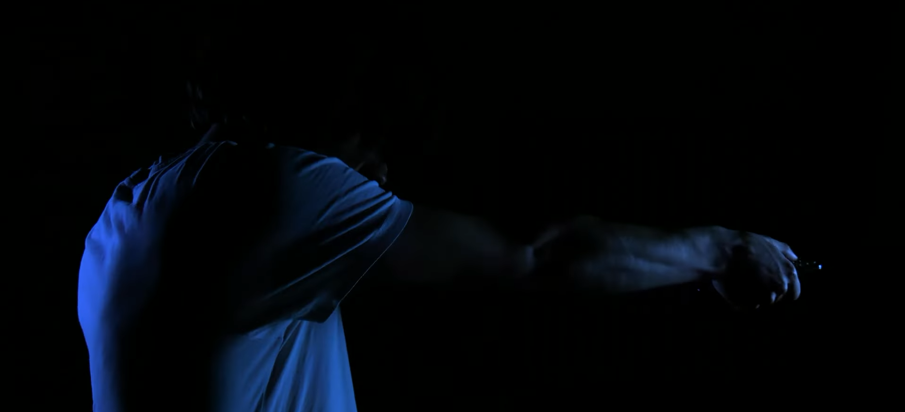
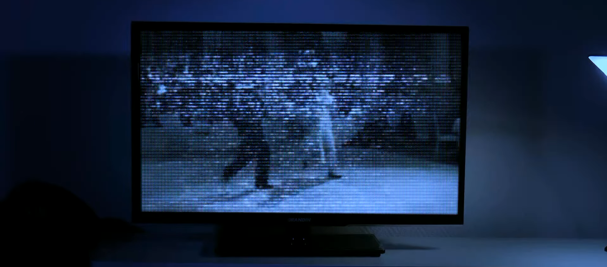
L'Étau de l'ombre — Court-métrage
Court-métrage réalisé dans le cadre de la spécialité Cinéma au Baccalauréat, sur le thème imposé de la dissimulation. Le film prend la forme d'un thriller psychologique à l'ambiance creepy et oppressante, installant un malaise progressif du début à la fin.
J'ai contribué à l'idée principale du scénario, géré la disposition des plans en respectant le découpage technique, et assuré une partie du montage en remplacement du monteur initial empêché. Le film a été sélectionné et projeté au Sémaphore de Nîmes pour le concours des lycées de la ville, où il a décroché la 3ème place.

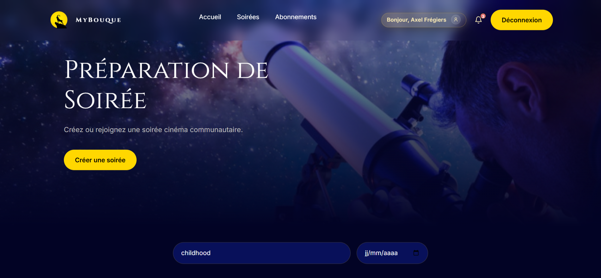
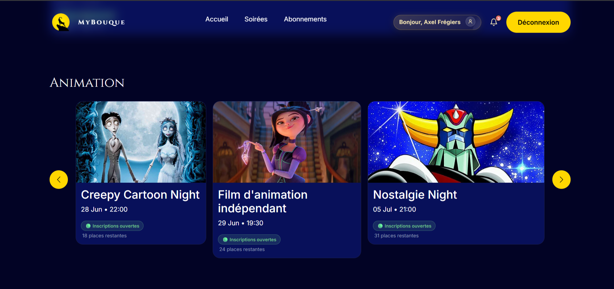
MyBouque — Site web interactifs
Projet universitaire réalisé en équipe dans le cadre de la SAE203, MyBouque est une application web complète de gestion de soirées cinéma thématiques. Les utilisateurs peuvent s'inscrire aux soirées, voter pour les films via la méthode de Borda et choisir la ville hôte par vote de pluralité.
J'ai contribué au développement du système d'authentification bcrypt, des interactions AJAX sans rechargement de page (inscription, votes, abonnements), d'un tableau de bord administrateur complet avec gestion des soirées et des utilisateurs, ainsi qu'un système de pass d'abonnement personnalisant les recommandations de la page d'accueil.

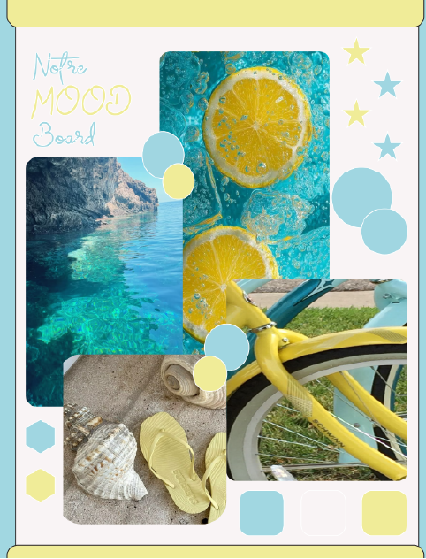
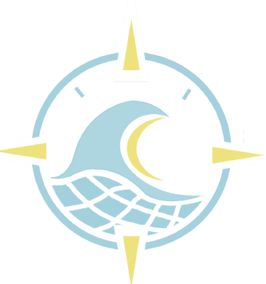
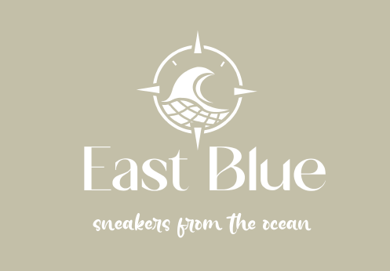
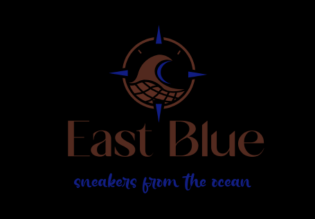
East Blue — Identité de marque
Projet de création d'une identité visuelle complète pour East Blue, une startup de sneakers éco-responsables fabriquées à partir de filets de pêche recyclés. La mission, concevoir une marque crédible, désirable et accessible pour des urbains de 22-30 ans soucieux de leur impact, sans tomber dans les codes visuels militants du greenwashing.
Le travail a couvert l'ensemble de la démarche, brief stratégique, benchmarking (Veja, Patagonia, Stone Island), création d'un persona et d'une empathy map, storyboard UX, moodboard, choix typographiques (TBJ Milky + Marinaga), palette de couleurs vives désaturées, et conception du logo, une boussole simplifiée intégrant une vague stylisée et un motif filet recyclé, décliné en versions couleur, négatif et monochrome.